Nothing here is decided. Green 🔒 = actually locked (flights, stays, car — the only real commitments). Amber ✎ = proposals — anchors we lean towards but nothing is booked. Dashed boxes are alternatives: pick one, or none. All of it is up for discussion. 📍 opens the place on Google Maps.
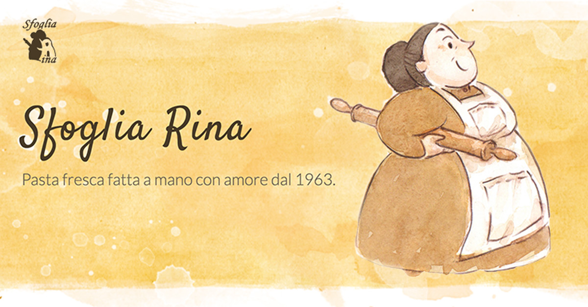
walk-inLate first plate at Sfoglia Rina ~16:00 — continuous kitchen, empty at that hourthen the Quadrilatero wander happens naturally after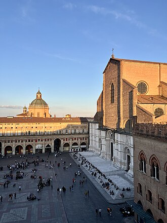
chillSkip food, wander the Quadrilatero + Piazza Maggiore with no planwhispering gallery 2-min detour; market streets at full energy from ~17:00; Gamberini espresso to hold out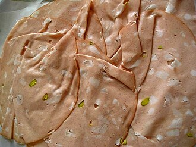
walk-inAperitivo picnic at Osteria del Solemortadella + parmigiano from Simoni next door, wine inside till 21:30 — dinner-sized if you let it be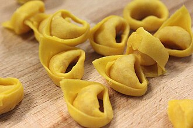
bookTrattoria di Via Serra dinner call late SeptFriday is one of its only slots this trip; the call also settles the “temp closed” flag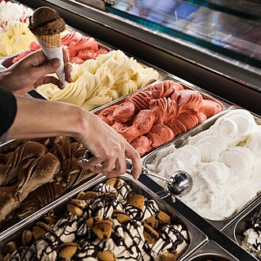
chillPasseggiata + first gelato (Cremeria Cavour), nothing elseLa Piazzola flea market runs Friday if energy allows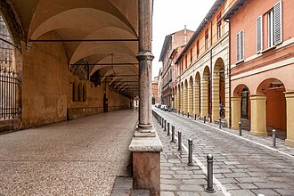
walk-inMercato Ritrovato farmers’ market (9–14) + La Piazzola flea marketthe antiques-morning combo, both walkable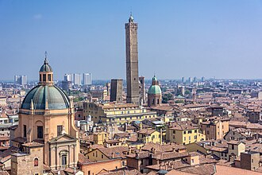
chillSlow start: Gamberini breakfast + canal walk to the Via Piella window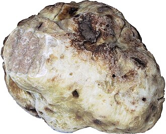
bookAmerigo 1934, Savigno — the splurge lunch book by early Septtaxi ~45 min; white-truffle season; the leading big-night candidate — claims the whole midday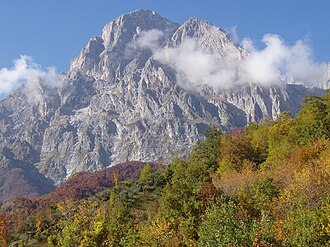
walk-inTartufesta truffle-village half-day in the Apennineshost towns published ~late Sept; bus/taxi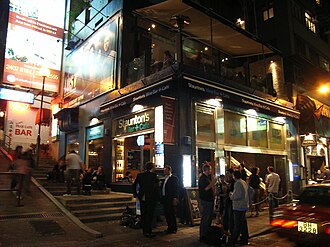
chillEnoteca afternoon — Faccioli (from 12:00 Sat) or Camera a Sud armchairs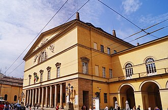
bookAlzira at Teatro Regio, Parma tickets late Septtrain 55 min; rare Verdi; the opera front-runner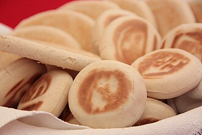
bookBroccaindosso crescentine nightbook 1–3 days ahead, from Italy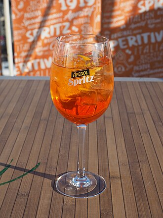
chillPratello bar crawl, no destination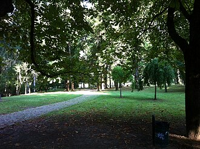
chillGiardini Margherita lawns, or Certosa cemetery in low sun (till 18:00)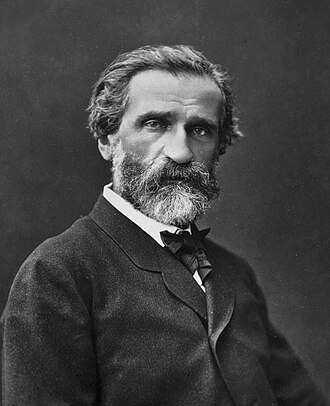
bookNabucco at Teatro Regio, Parma tickets late Septthe 14-hour-day option; only if maximal Sunday appeals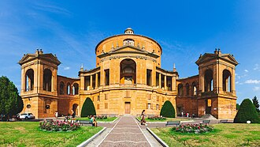
chillSunset from San Michele in Bosco (18:24) → gelato → passeggiatathe locals’ Sunday night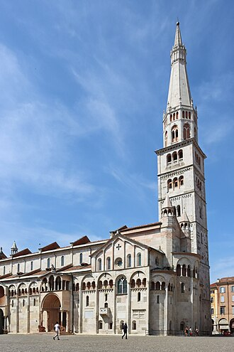
bookGhirlandina tower slot book ~1 wk outtimed hourly, max 25 — late-morning slot; skippable if heights/queues don’t appeal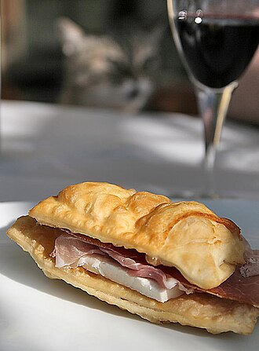
walk-inErmes — shared tables, queue before noon⚠ I phone-verify before the trip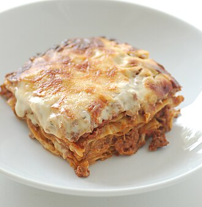
bookDa Danilo — bookable morning-of, zero risk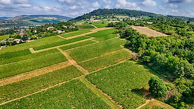
bookGaggioli winery en route — 10-min detour book 3+ days aheadPignoletto + salumi, €43pp — competes with Venturini Baldini below: pick at most one winery today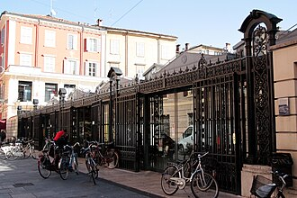
walk-inModena lunch stop if Monday changed shape (Albinelli closes 14:30)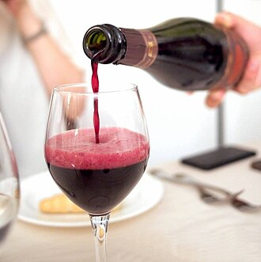
bookVenturini Baldini tasting ~15:00 book ~2 wks outdry lambrusco + estate acetaia, 20 min from base — the winery front-runner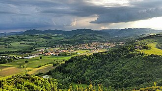
walk-inTerme della Salvarola — couple’s weekday entry €55, 30 min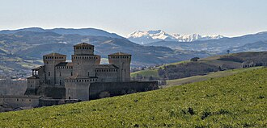
bookCountryside path: castle 13:00 → lunch 13:45 at Al Mulino di Torrechiara beneath it → Langhirano valley home in golden lightthe clean sequence; book the mill a day or two ahead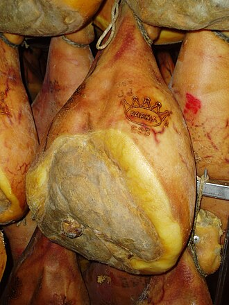
walk-inCity path: Sorelle Picchi culatello lunch (seatings to 13:45) → castle squeezed 13:45–14:30 or skipped → slow drive homebest culatello of the trip; castle becomes optional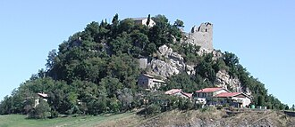
walk-inCanossa ruins on the way out + erbazzone from a Reggio-side bakery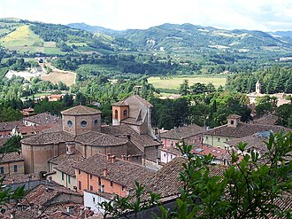
chillFast road ~1h45 — arrive by 15:00, more village time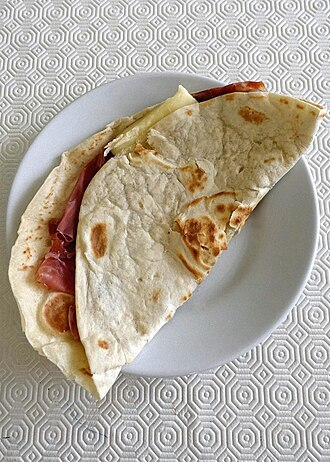
walk-inPiadina counters: Profumo di Piadina or Melarancio — the intended lunch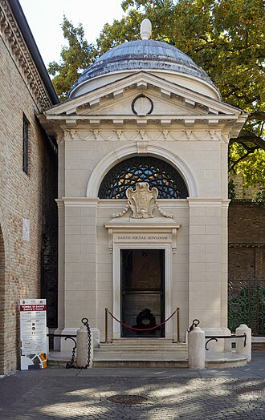
walk-inCa’ de Vèn if cold or ceremonial — day-before booking enough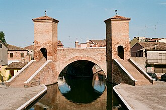
chillComacchio + flamingo lagoon (~45 min further) — clear-sky option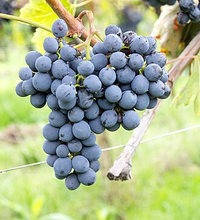
walk-inGiovinBacco Sangiovese festival⚠ Ravenna or Forlimpopoli — I confirm in Sept; could claim evening too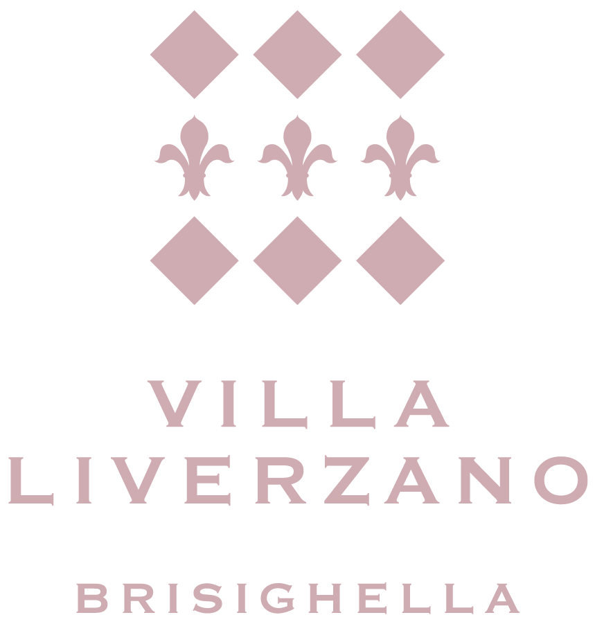
chillBack early: Liverzano grounds, book, wine, nothing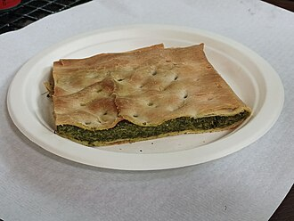
bookLa Grotta — the cave dining room, open only YOUR Fridaybook a few days out, from Italy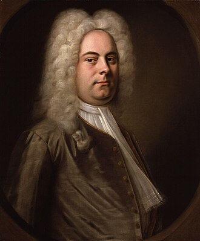
bookSemele at Auditorium Manzoni, Bologna tickets late Sept1h10 each way night drive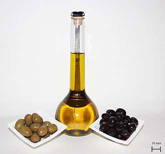
chillNothing. Long breakfast, one last village loop, leave unhurried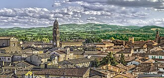
walk-inFaenza ceramics stop (10 min off-route) — only if the morning ran briskPhotos: Wikipedia/Wikimedia Commons thumbnails (plus venue sites). ⚠ items get phone-verified 1–2 weeks before the trip.